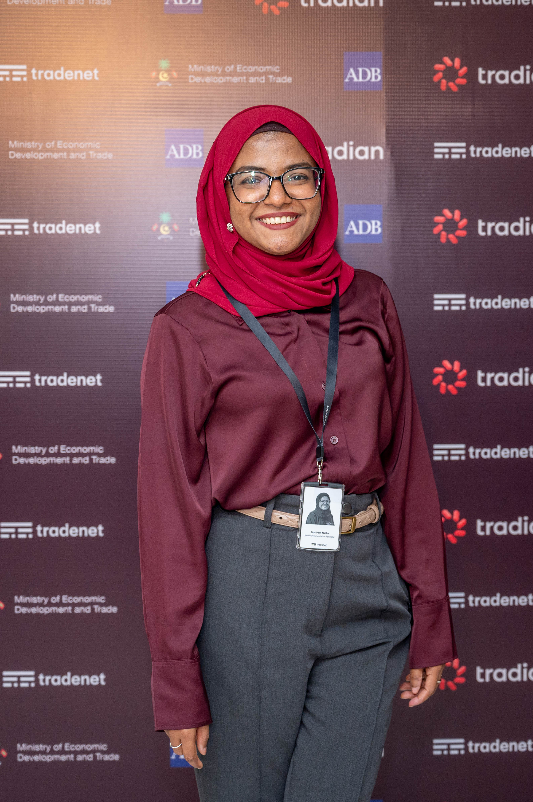

Friendly and professional bank teller with over almost 3 years of experience providing excellent customer service, handling customers banking transactions and selling new products and services. Eager to learn new things, take on new challenges to improve the personal skills and knowledge and to grow as a person.
Working on the Maldives National Single Window project as a documentation specialist. Main task is to prepare and create content for the Tradian Portal by collecting information from all relavant agencies.
Daily tasks included: handling transactions, processing deposits, withdrawals, money transfers and loan payments. Maintained company compliance by meticulously recording and documenting each transaction and all documentation and paperwork. Helped train new bank tellers.
Presented plans that included suggested investing strategies, financial products, and services well suited to the client's needs. Supported the senior financial planners via research, drafting of documents, interfacing with clients, and other office tasks. Evaluated new clients to determine their financial needs and resources. Managed advisor calendars. Answered phone calls and scheduled appointments.